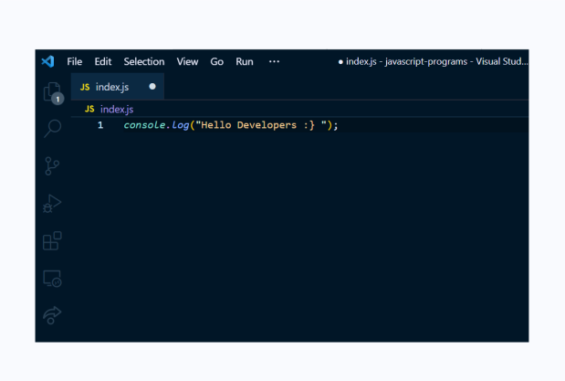
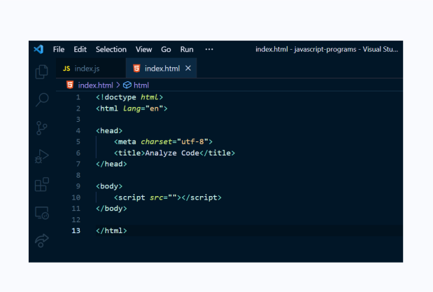
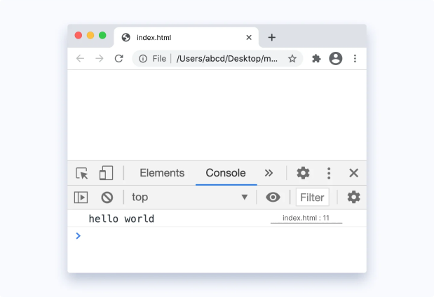

Getting Started With JavaScript
In this tutorial, you will learn about different ways to run JavaScript on your computer.
JavaScript is a popular programming language that has a wide range of applications.
JavaScript was previously used mainly for making webpages interactive such as form validation, animation, etc. Nowadays, JavaScript is also used in many other areas such as server-side development, mobile app development and so on.
Because of its wide range of applications, you can run JavaScript in several ways:

1. Using Console Tab of Web Browsers
All the popular web browsers have built-in JavaScript engines. Hence, you can run JavaScript on a browser. To run JavaScript on a browser,
Open your favorite browser (here we will use Google Chrome).
Open the developer tools by right clicking on an empty area and select Inspect.
Shortcut : F12

On the developer tools, go to the console tab. Then, write JavaScript code and press enter to run the code.

Using Node JS
Node is a back-end run-time environment for executing JavaScript code. To run Javascript using Node.js, follow these steps:
Install the latest version of Node.js .
Install an IDE/Text Editor like Visual Studio Code. In VS code, create a file > write JS code > save it with .js extension.
Open up the terminal/command prompt > navigate to the file location > type node index.js ( name of your file ) > hit enter. or you can just press the shortcut in vs code Ctrl Alt N

You will get the output on the terminal.
By Creating Web Pages
JavaScript was initially created to make web pages interactive, that's why JavaScript and HTML go hand in hand. To run JavaScript from a webpage, follow these steps:
Open VS Code > Go to File > New File > Save it with .html extension. For example, main.html.
Type this doctype (minimum valid HTML code) or you can also use code snippet in VS code just type ! then hit enter, give path of javascript file and save it in the file
Similarly create a JS file, write the following JS code and save it with .js extension like index.js .
Open the index.html file using a browser.
To check if our JS code ran or not, Right click on the web page > Inspect > Choose console tab.
Now that you know how to run JavaScript, let's start learning the fundamentals of JavaScript from the next tutorial.